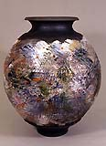

| Raku FAQs
by Steven Branfman.

Frequently Asked Questions: RAKU
Compiled 5/31/96 by Steven Branfman, sbranfpots@aol.com.
Author of Raku: A Practical Approach, Second Edition and
The Potters Professional Handbook. The Potters Shop 31 Thorpe
Rd. Needham MA 02494, 781/449 7687. Revised 9/02
COPYRIGHT © 1996. All rights reserved. Contact the author for
permission to issue a copy in any form.
Raku is a technique that carries with it many misconceptions, confusion,
and questions. Contained here is a brief explanation of what raku
is, followed by some of the most common questions asked of me during
workshops and demonstrations.
You may be interested in the format in which this is organized.
I write a FAQ (frequently Asked Questions) column for an internet
newsgroup (rec.crafts.pottery). This FAQ as well as several others
are posted monthly, and periodically updated. If you have internet
access you may want to check it out!
- What is Raku?
- Didn't Paul Soldner invent raku?
- How do pit, sawdust, smoke firing, and raku differ?
- Isn't raku a once-fire process where you don't
have to bisque
first?
- Is raku suitable for functional use?
- What constitutes a raku clay?
- What is a raku glaze?
- Which cones do I use in raku?
- How do you get those bright metallic effects? Sometimes
my
glazes don't crackle as much as I like. What can I do?
- All I ever get are bright metallic effects. How
do I get more colorful glaze effects?
- Can I preheat my pots in the kiln as it is warming
up (starting
with a cold kiln)?
- Must I use a certain type of kiln or can I fire
raku in an electric kiln?
- When it comes to kilns I've heard the terms flue,
damper, stack, and chimney. How do they apply to raku kilns?
- Why can't I reach temperature no matter how much
gas I use?
- Don't the tongs used to lift the pots leave marks?
- I'm confused about the term 'reduction.' Can you
explain what this means?
- Must I remove my ware from the kiln to apply post
firing reduction or can I insert reduction material into the kiln
chamber?
- Do different types of reduction material give
different effects?
- Must their be clouds of smoke when doing raku?
- What is 'smokeless raku'?
- What is meant by 'slip resist' in raku?
1. What is raku?
Raku is a pottery technique that has it's origins in 16th century
Japan. We are pretty sure that it was developed by Korean potters
under Japanese rule but the exact circumstances of it's development
and in what context it was discovered is a mystery. The raku technique,
like other pottery techniques such as salt glazing and pit firing,
primarily revolves around it's firing process although involvement
with raku often goes much deeper into its philosophy, roots, and
cultural significance. Traditional raku and our western version
of raku are similar in many ways though there are some significant
differences.
To briefly describe the raku process we must understand that most
all other types of pottery are loaded into a cold kiln where the
firing proceeds slowly until the desired temperature is reached.
This firing cycle may take anywhere from 8-24 hours or even longer.
When the kiln has reached temperature (which is generally determined
through the use of pyrometric cones), it is shut off and allowed
to cool enough to be able to remove the ware using bare, or lightly
gloved hands. The cooling cycle may last from 12-24 hours or longer.
The ware is considered finished when it is taken from the kiln.
In raku, the pieces may be loaded into a cold kiln but are often
preheated and loaded into a hot kiln. The firing proceeds at a rapid
pace with the wares reaching temperature in as short a cycle as
15-20 minutes (though raku firings can last up to several hours
depending on the individual pieces and their firing requirements).
Glaze maturity is judged by the trained eye without the use of cones
or measuring devices. When the firing is determined to be completed
the wares are immediately removed from the kiln. Since at this point
the glaze is molten, tongs or other lifting devices are used.
This is the stage in the process where traditional and contemporary
raku differ in technique and treatment. In our western version the
wares are now treated to a 'post firing reduction' phase. The wares
are put into a container with combustible material such as sawdust,
or leaves and allowed to smoke for a predetermined length of time.
The carbonaceous atmosphere reacts and affects the glazes and clay
and imparts unique effects and surfaces to the wares. Some of these
effects are metallic and crackled glazes surfaces and black unglazed
clay. When the wares have cooled, they are washed with an abrasive
cleaner to remove all residue of soot and ash.
2. Didn't Paul Soldner invent raku?
Not exactly. Soldner is an innovator and one of a few responsible
for popularizing raku in this country beginning in the 1950's. Raku
was first developed by Korean potters under Japanese rule in the
17th century. The circumstances that led to its launch and spread
are somewhat of a mystery though.
3. How do pit, sawdust, smoke firing, and raku
differ?
These types of firings are often confused with each other because
they can share some similar characteristics. Briefly, raku ware
is fired in a more or less conventional type kiln where glaze technology
is understood and utilized. The others are forms of primitive firing
where temperatures reached are generally lower and glazes are not
commonly used. In primitive firings, the "kiln" may consist
of a simple hole in the ground (ie, a pit).
4. Isn't raku a once-fire process where you
don't have to bisque first?
Raku firing greenware is a sure way to line the bottom of your
kiln with shards. Always bisque-fire to at least Cone 08 before
glazing and raku firing.
5. Is raku suitable for functional use?
The traditional use of raku ware in the Japanese tea ceremony has
contributed to confusion about the functional use of raku. With
very few exceptions, all raku fired ware is fragile, porous, and
generally unsuitable for functional use. Unless such fragile ware
is treated post-firing with a non-glaze material, such as a polyurethane
or acrylic sealer or an oil of some kind, the pots will sweat water
and eventually breakdown. Treat raku as decorative. The occasional
use of raku in a functional setting is OK but keep in mind that
the glaze is soft and can be easily chipped and end up being ingested.
If you must use your pots for food try to limit the use to dry food.
The fragility of the ware also renders the reliability of handles
and other appendages extremely questionable.
6. What constitutes a raku clay?
A raku clay is any clay that can be successfully raku fired. That
includes most any type of clay out there! As I say at my workshops;
"I've never met a clay that I couldn't raku." Generally
though, a clay suitable for raku needs to contain a lot of fireclay
and similar refractory materials so that it can withstand the sudden
heat shock of the raku process. This includes most stock stoneware
clays. The clay does not have to be loaded with coarse grog but
it does have to be open enough to expand and contract without cracking.
Most clay suppliers can help you choose an appropriate clay body.
The other characteristics that you are looking for are your personal
ones such as plasticity, color, texture, etc. Nothing needs to be
sacrificed in order to have a good, reliable raku clay.
7. What is a raku glaze?
Similar to the question of raku clays is the answer to this question.
Any glaze that you can successfully raku fire is a raku glaze. The
most important factors in identifying raku glazes is the temperature
at which they mature, how you plan on using them, and what kind
of effects you are looking for. You must also keep in mind that
if you are using a variety of glazes on the same pot or in the same
kiln load, unless you know that they all mature to your satisfaction
at around the same temperature, you will be faced with varying degrees
of maturity. However, just because a glaze is formulated to fire
at a temperature higher than your usual range doesn't mean that
you should eliminate that glaze from your pallet. Experiment with
your glazes to achieve a variety of surface effects from dry textures
to surfaces with a high gloss. Don't limit yourself to homemade
or personal glazes either. Try low fire commercial glazes for some
unusual results.
8. Which cones do I use in raku?
The only cones that should be used near a raku kiln are ice cream
cones. Because of the fast firing, varying atmosphere, multiple
loads and other factors, pyrometric cones are generally poor indicators
of heat and temperature so they are not used. Most raku potters
fire their wares using the actual glaze melt as the visual indicator
of maturity. Many potters, however, do use pyrometers or cones to
warn of coming glaze maturity and then check the ware visually through
the peephole(s). It takes some temperature of raku depends on the
glazes that you are using. Most raku is fired in the range of cone
010-06. You must remember though that you as the maker of the pots
are the final expert on whether a glaze is mature,
underfired, or overfired. If a glaze is not glossy enough, doesn't
have the expected crackles or metallic effects, or doesn't exhibit
any other characteristic that you find desirable, you need to adjust
the firing.
9. How do you get those bright metallic effects?
Sometimes my glazes don't crackle as much as I like. What can I
do?
Assuming you are using the correct glazes, both metallic effects
and dark crackle lines are a result of firing the glazes to their
maximum maturity followed by a fast post-firing reduction technique.
You must quickly get your pot from the kiln to the reduction container
and covered before the pot has a chance to cool too much, otherwise
the post-firing reduction will not be effective. Pronounced crackle
effects are also often dependent on a thick application of glaze.
10. All I ever get are bright metallic effects.
How do I get more colorful glaze effects?
This is the exact opposite of the previous question and problem.
Brighter colors need a degree of post firing oxidation in order
to develop. There are several ways to achieve this. When you remove
the ware from the kiln, spray the areas with water where you would
like more color to develop before placing the ware in the reduction
container. This will oxidize and cool the glaze. Another method
is to hold the ware in the air for 10 - 30 seconds before reducing
the ware. Allow the combustible material to ignite and cover the
container only after flames have clearly developed. Other potters
will uncover the reduction container after a short time allowing
the material to ignite again while fanning the ware. Using these
and other similar techniques you will learn how to control the amount
of metallic and colorful effects on your wares as well as grey to
black unglazed areas.
11. Can I preheat my pots in the kiln as it
is warming up (starting with a cold kiln). I will be using a fiber
garbage can kiln with a lift-off lid, not one where the entire kiln
lifts off. I don't see how my pots will get preheated enough by
just setting them on the lid. Do they get hot enough on a fiber/expanded
metal lid?
This question shows a common misunderstanding about the raku process.
The only time you need to be concerned about preheating your ware
is when you are doing multiple firing loads in the same kiln. The
first load should always be in a cold kiln taking the temperature
up slowly. Only if you are going to fire additional loads should
you be preheating your pots on or along-side the kiln. If the lid
of the kiln is a wire mesh/fiber lid then you might get enough radiant
heat. Place the pots near the flue opening so they get the heat
coming from the draft. Be careful not to place them too close, too
soon, or they may break. After preheating on top of the kiln you
can place the pieces around the base of the kiln after you remove
the fiber chamber, let them heat up there for a minute or two, then
put them on the kiln shelf letting them sit for another minute,
then put the chamber back in place for a minute, then re-light the
burner.
12. Must I use a certain type of kiln or can
I fire raku in an electric
kiln?
Most any type of kiln can be used for raku as long as it meets
certain requirements of the raku process. It must be located outdoors
or in close proximity to the outdoors. You must be able to easily
reach into the kiln to remove your ware. If you are going to be
firing multiple loads the temperature of the kiln must be easily
controlled. An electric kiln is perfectly suitable for raku although
there are some special considerations that require careful attention.
You must remember that you are exposing yourself to live electrical
current when you open an electric kiln so you must protect yourself
from any possible contact with the current. There'll be more on
this in a subsequent revision of this FAQ.
13. When it comes to kilns I've heard the
terms flue, damper, stack, and chimney. How do they apply to raku
kilns?
All fuel fired kilns need some way for the gases to exit, the air
flow to be controlled, and air to enter the chamber. Conventional
kilns have a flue, damper, and stack (or chimney). The flue is a
path in the kiln for the gases to move through after they have circulated
through the kiln on their way to the stack. The damper is a device,
usually a kiln shelf, that slides in and out of the lower part of
the stack in order to control the size of the opening, thus controlling
the exit of the gases and their mixture with air. Raku kilns are
generally small and overpowered. Most have a simple opening in the
top of the chamber covered by a kiln shelf shard. The kiln chamber
chamber is essentially the stack with the opening the flue and the
kiln shelf the damper.
14. Why can't I reach temperature no matter
how much gas I use?
This is the most common question regarding the raku firing. Successful
rise of temperature in any fuel-fired kiln depends on the correct
mixture of air and fuel. A hotter kiln is not necessarily dependent
on more fuel! If there is too much fuel, the atmosphere will be
smoky, full of flames and the temperature will not rise. Also, if
there is too much air, the temperature will stagnate or fall. Usually,
the solution to a situation in which the kiln doesn't reach temperature
is to increase the air in the air/fuel mixture. In a gas-fired kiln
this can be done by increasing the available air in the burner or
around the burner. You can also simply open the flue (the opening
at the top of the kiln). Most potters use a venturi type burner
that has a disk that screws open or closed. Open it for more air.
If you are using a power burner in which a fan is attached, increase
the air flow. Experiment to arrive at the correct mixture but be
patient!
15. Don't the tongs used to lift the pots
leave marks?
Sometimes they do. More often though the glaze is still molten
enough that once the pot is released from the tongs, the marks tend
to smooth out. In either case the tong marks should not be treated
as defects but rather as characteristics of raku.
16. I'm confused about the term 'reduction.'
Can you explain what this means?
Reduction is a firing term that refers to a lack of oxygen in the
combustion process. This lack of oxygen in the atmosphere causes
the fuel to search for oxygen elsewhere to allow for more complete
combustion to take place. This can take place during a firing as
in 'reduction stoneware.' In this conventional situation, the additional
oxygen is found chemically bound in the the clay body and glazes.
The result is characteristic reduction effects. Reduction as it
is referred to in raku usually takes place out of the kiln separate
from the actual firing as described earlier. However, just because
you are doing raku doesn't mean that you can't experiment with actual
reduction firing in the more conventional sense.
17. Must I remove my ware from the kiln to
apply post firing reduction or can I insert reduction material into
the kiln chamber?
As described earlier, post firing reduction is normally done by
removing the ware from the kiln and placing it in a container with
your combustible material. Certain situations may make it difficult
to actually remove the wares from the kiln while they are hot. For
instance your piece may be too large or awkward to handle. In this
case you can achieve some post firing success by shutting off the
kiln, adding your reduction material to the chamber, and closing
off all open ports including the flue, peep hole, and burner ports.
At best, the chamber will be only marginally sealed and since effective
reduction depends on on air tight chamber, your reduction will be
only partially successful. If your kiln is a lift off fiber type
then you might try removing it and replacing it with a metal drum
or can for the reduction phase.
18. Do different types of reduction material
give different effects?
The short answer is yes. The long answer is much more complicated!
Here is a medium answer: Your reduction effects are certainly influenced
by how much carbon is in the atmosphere that surrounds your pot.
In other words, how much smoke your pot is quickly subjected to.
Some materials have the potential to release more carbon than others.
The condition of your material (wet, damp, dry) as well as the particle
size as in the case of wood materials (sawdust, shavings, chips)
can be important. The type of wood can also affect your results.
19. Must there be clouds of smoke when doing
raku?
Raku doesn't require smoke at all. There are two aspects of the
process that have the potential for creating smoke. If you are using
a fuel fired kiln (as opposed to an electric kiln) then it is likely
that there will be at least some smoke generated during the firing.
If you are doing post firing reduction, there will be smoke created
then as well. The amount of smoke is determined by the efficiency
of your reduction technique, the material you are using, and the
amount of material you are using. If you are reducing in a container,
the tighter the lid fits, the less smoke will exit the container.
There are other techniques of reduction that create less smoke than
others. Of course if you are not doing post firing reduction and
simply cooling your ware when it comes from the kiln, then there
is no smoke created.
20. What is 'smokeless raku'?
'Smokeless raku' is not really smokeless at all. The term was coined
by Jerry Caplan who has been developing his techniques for many
years. It is a post firing reduction technique that is designed
to produce minimal smoke by keeping the reduction chamber as air
tight as possible. This can be done using a combination of tight
fitting lids with 'gaskets' of wet paper or cloth. The tightest
chamber is one made by inverting your container onto a bed of sand
or dirt. Arrange a ring of sand or dirt on the ground for the lid
of your container to fit onto when placed upside down. Place your
reduction material within the ring. Quickly place your ware onto
the material and cover it with the container pushing the rim of
the container into the sand. Bury the rim with additional sand to
keep the smoke in.
21. What is meant by 'naked raku' and 'slip
resist' in raku?
Naked raku or slip resist refers to a variety of techniques whereby
a clay slip is applied to the surface of the ware. This slip is
formulated to peel away during the firing, and not permanently adhere
to the surface. As the slip peels, shrinks, and separates from the
surface it exposes the ware to varying degrees of post firing reduction.
When the piece is cooled, whatever slips remains on the pot is removed
by scraping and cleaning. As a further decorative process, you can
scratch and draw through the slip prior to firing to create designs.
For a complete handbook covering everything you need to know about
the practice of raku see the book 'Raku: A Practical Approach, Second
Edition' by Steven Branfman, the author of this FAQ. The book is available
at your favorite book store, pottery supplier, or you can order directly
from Steven's studio, The Potters Shop, Phone: 781-449 7687 (inside
US), +1-781-449 7687 (outside US) or email PottersShop@aol.com.
More Articles
Raku links
|